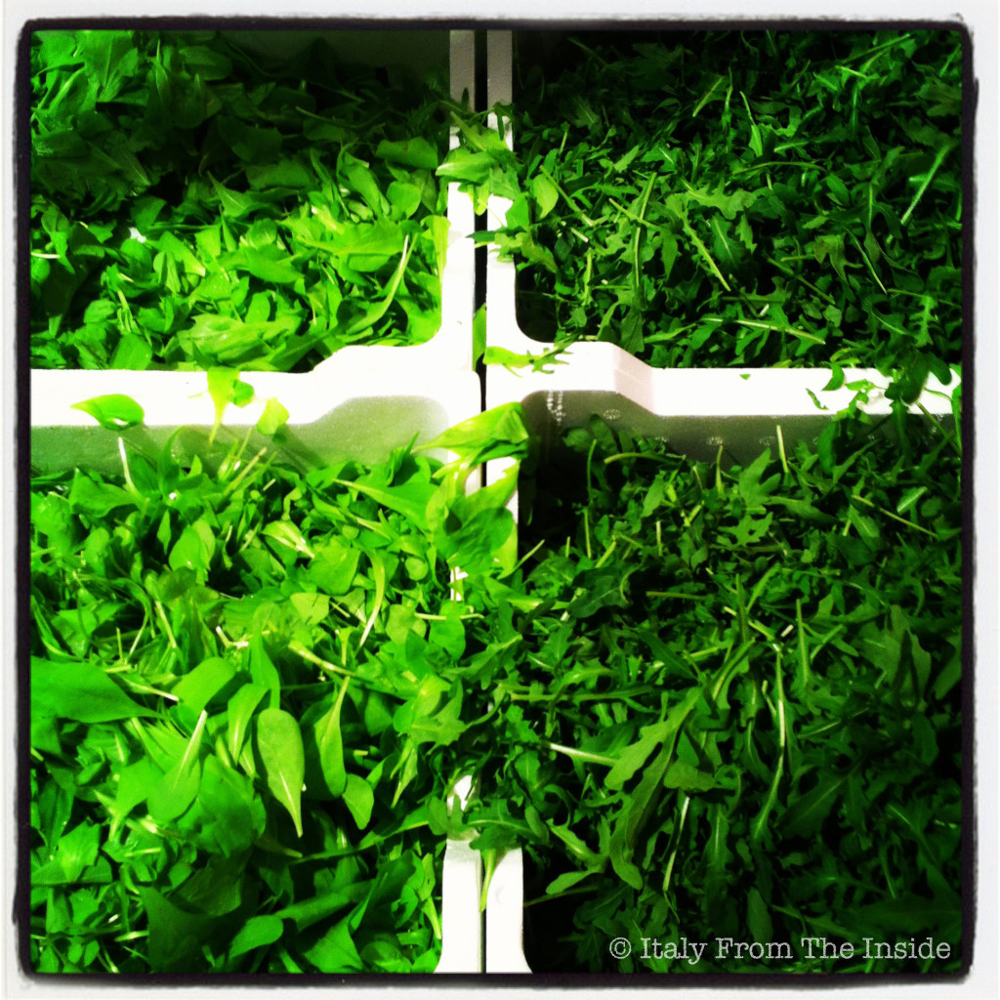

I love this photo. Maybe it is because green has always been my favorite color or maybe it is because you can create some very interesting images from some very unusual subjects, the fact is that this picture is one of my favorite ones. Radicchio on the left, rucola (arugula) on the right as I found them in an Italian supermarket. Click.